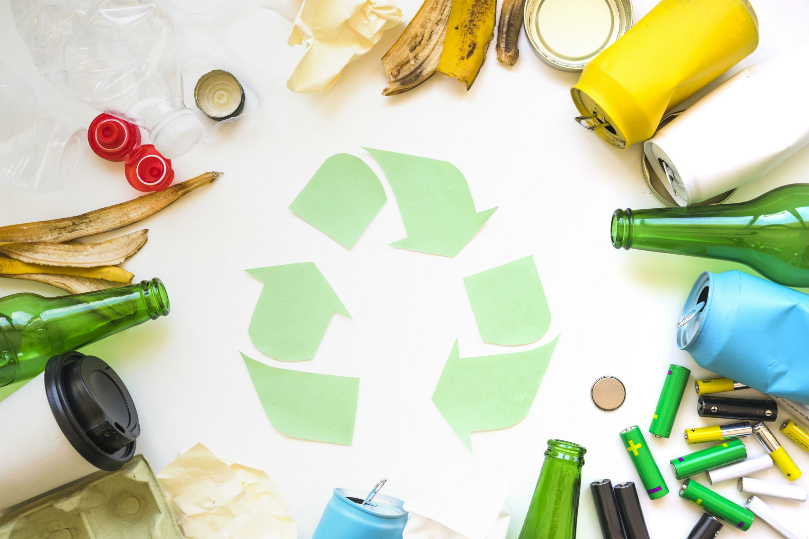
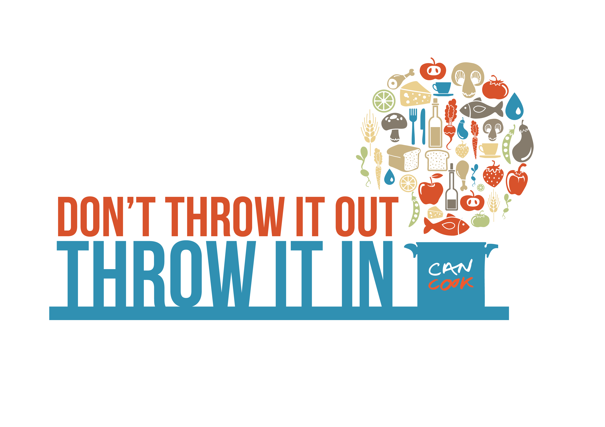

Play your part!
Efficient and effective waste management is best achieved at household levels.
If every person gets involved, we can have a powerful effect on the our environment in a positive way.
Many times, people want to do the right things but they feel they are alone, and their actions will not make any difference — YES IT WILL!!
There are millions of great teens like you who appreciate the magnitude of the waste problem and are doing the right things to help. But we can do more and get
others who are not doing well to do better.
Reduce creating waste
The next time you change the waste-bin bag, take a look inside it. Is there anything that could have not ended up there?
Probably. Try cutting the waste you produce at home into half.

Re-use things that end up as waste
There are things that can be used over and over again: package boxes, gift wrappers, clothing, furniture and even playing toys.
If even you have outgrown them, you can give it out to someone who has a need for it. Do not be too quick to throw them away.
Lead or join an environmental society
Some people live in communities that have no littler collection and waste collection programmes.
This is a good time to start or join a society that can push for this kind of service.
Home
Previous